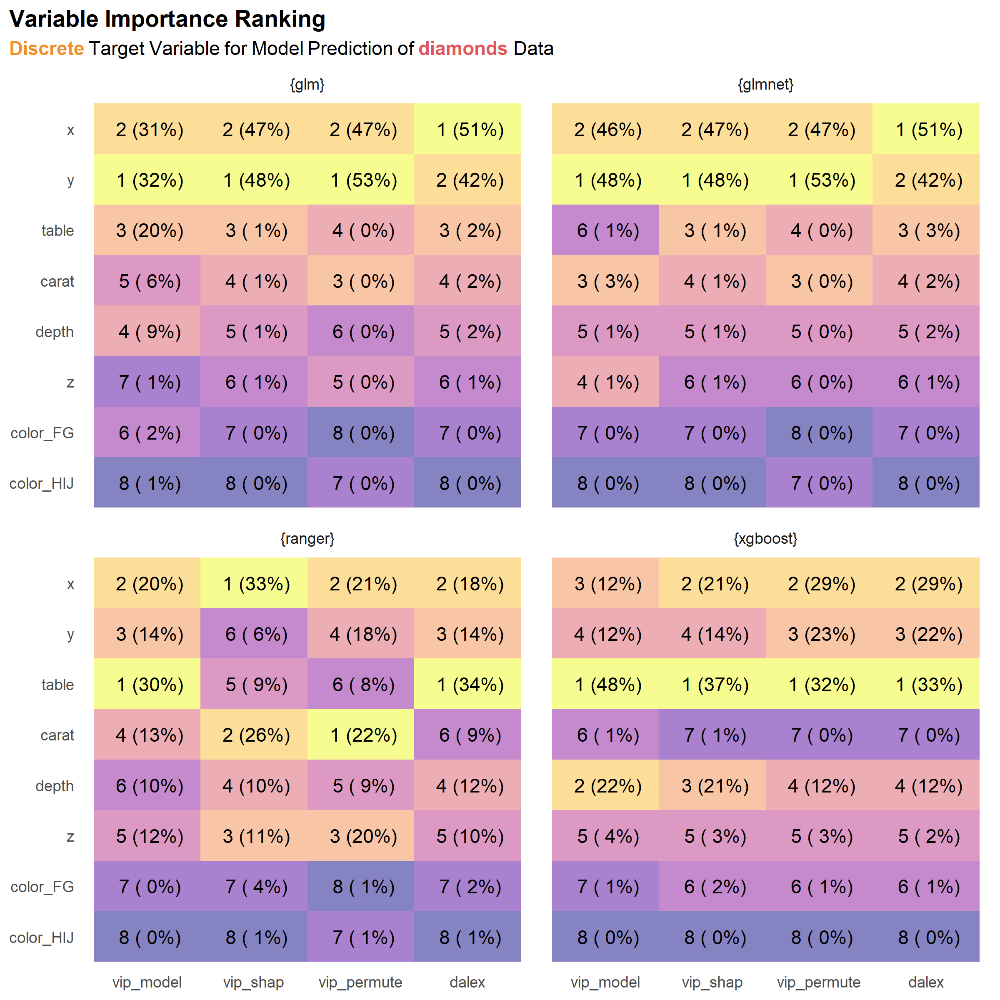
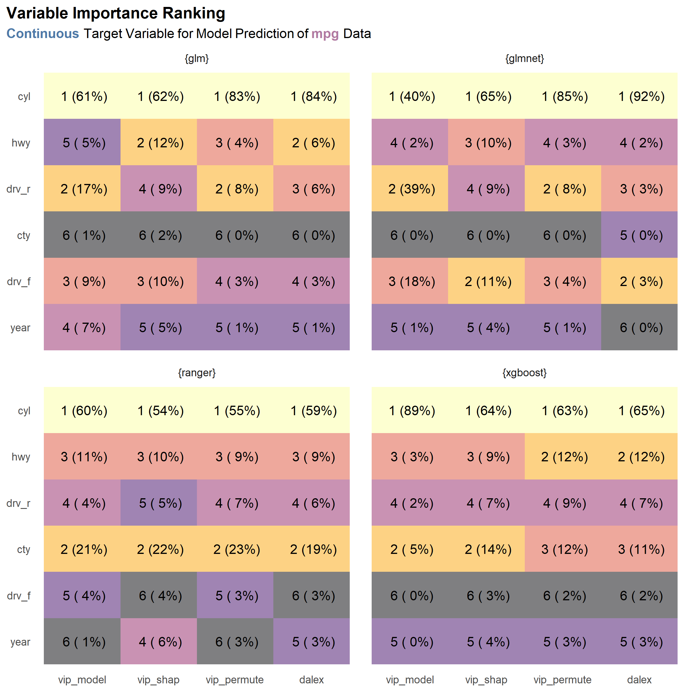
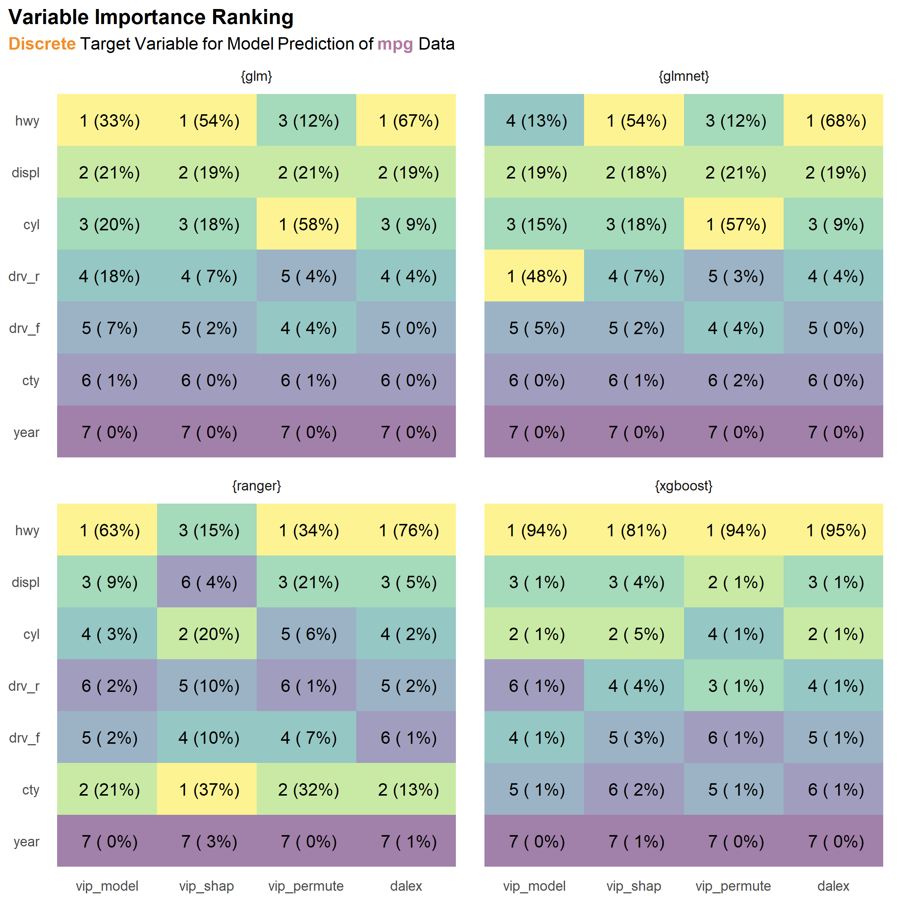
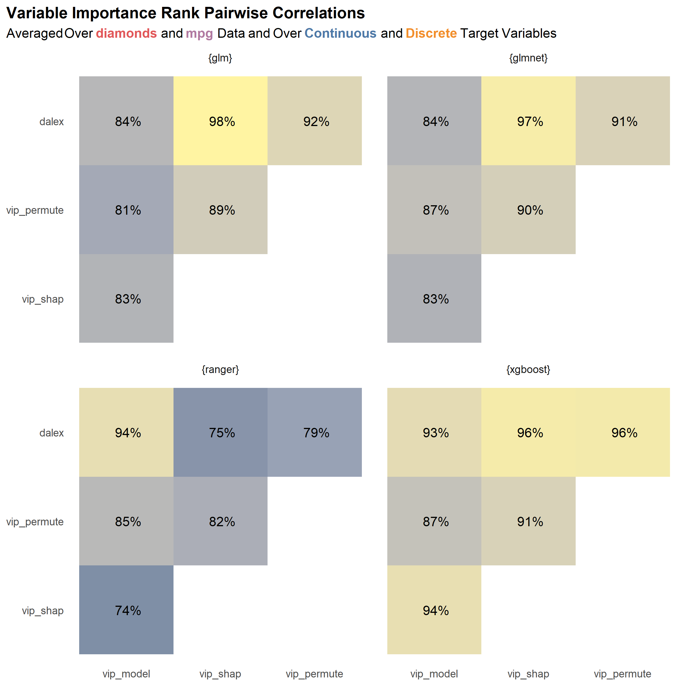

Comparing Variable Importance Functions (For Modeling)
I’ve been doing some machine learning recently, and one thing that keeps popping up is the need to explain the models and their components. There are a variety of ways to go about explaining model features, but probably the most common approach is to use variable (or feature) importance scores. Unfortunately, computing variable importance scores isn’t as straightforward as one might hope—there are a variety of methodologies! Upon implementation, I came to the question “How similar are the variable importance scores calculated using different methodologies?” 1 I think it’s important to know if the different methods will lead to drastically different results. If so, then the choice of method is a source of bias in model interpretation, which is not ideal.
This post isn’t intended to be a deep-dive into model interpretability or variable importance, but some concepts should be highlighted before attempting to answer this question. Generally, variable importance can be categorized as either being “model-specific” or “model-agnostic”. Both depend upon some kind of loss function, e.g. root mean squared error (RMSE), classification error, etc. The loss function for a model-specific approach will generally be “fixed” by the software and package that are used2, while model-agnostic approaches tend to give the user flexibility in choosing a loss function. Finally, within model-agnostic approaches, there are different methods, e.g. permutation and SHAP (Shapley Additive Explanations).
So, to summarize, variable importance “methodologies” can be broken down in several ways:
- model-specific vs. model-agnostic approach
- loss function 3 . model agnostic method (given a model agnostic approach)
I’m going to attempt to address (1) and (3) above. I’m leaving (2) out because (a) I think the results won’t differ too much when using different loss functions (although I haven’t verified this assumption) and (b) for the sake of simplicity, I don’t want to be too exhaustive in this analysis. 3
I also want to evaluate how variable importance scores differ across more than one of each of the following:
- model type (e.g. linear regression, decision trees, etc.)
- type of target variables (continuous or discrete )
- data set
While evaluating the sensitivity of variable importance score to different methodologies is the focus of this analysis, I think it’s important to test how the findings hold up when (1) varying model types, (2) varying target variables, and (3) varying the data itself. This should help us highlight any kind of bias in the results due to choice of model type and type of target variable. Put another way, it should help us quantify the robustness the conclusions that are drawn. If we find that the scores are similar under variation, then we can be more confident that the findings can be generalized.
Additionally, I’m going to use more than one package for computing variable importance scores. As with varying model types, outcome variables, and data, the purpose is to highlight and quantify possible bias due to choices in this analysis—in this case, the choice of package. Are the results of a permutation-based variable importance calculation the same when using different packages (holding all else equal)?
Specifically, I’ll be using the {vip} and {DALEX} packages. The {vip} package is my favorite package to compute variable importance scores using Ris because it is capable of doing both types of calculations (model-specific and model-agnostic) for a variety of model types. But other packages are also great. {DALEX} package specializes in model-agnostic model interpretability and can do a lot more than just variable importance calculations.
Setup
For data, I’m going to be using two data sets from {ggplot2}. 4
increase computation time. (b) I’ve excluded two of the categorical features—clarity and color, both of which are categorical with a handful of levels. I’ve done this in order to reduce the number of variables involved and, consequently, to speed up computation. (This is just an example after all!) (c) To test how variable importance scores differ for a continuous target variable, I’ll be defining models that predict price as a function of all other variables. (d) For discrete predictions, the target is a binary variable grp that I’ve added. It is equal to '1. Good' when cut %in% c('Idea', 'Premium') and 2. Bad' otherwise. It just so happens that grp is relatively evenly balanced between the two levels, so there should not be any bias in the results due to class imbalance.
I made modifications to both, so see the footnotes and/or code if you’re interested in the detailI made modifications to both, so see the footnotes and/or code if you’re interested in the details.
For model types, I’m going to trial the following:
- generalized linear model (linear and logistic regression) with
stats::lm()andstats::glm()respective ly - generalized linear model with regularization using the
{glmnet}package - bagged tree (random forest) using the
{ranger}package - boosted tree (extreme gradient boosting) using the
{xgboost}package
With glmnet::glmnet(), I’m actually not going to use a penalty, so (I think) it should return the same results as lm()/glm(). 5 For {ranger} and {xgboost}, I’m going to be using defaults for all parameters. 6
{vip}’s model-specific scores with (vip::vip(method = 'mod l')){vip}’s permutation-based scores (withvip::vip(method = 'permute')){vip}’s SHAP-based values (withvip::vip(method = 'shap')){DALEX}’s permutation-based scores (withDALEX::variable_importance())
Note that the model-specific vs. model-agnostic concern is addressed in comparing method (1) vs. methods (2)-(4). I’ll be consistent with the loss function in variable importance computations for the model-agnostic methods–minimization of RMSE for a continuous target variable and sum of squared errors (SSE) for a discrete target variable. 7
Results
The following handful of plots illustrate normalized variable importance scores and ranks derived from the scores by data set and type of target variable.
First up is the results for the diamonds data set with a continuous target variable.
me: the model-specific scores differ relatively strongly from the rest of the scores given a specific model type. (See the numbers in the parentheses in the first column in each facet labeled vip_model compared to those in the other columns of each facet. 8 For example, the model-specific variable importance score for the carat feature for the {glm} model type is 49%, while the same score for the SHAP variable importance method (vip_shap) is 35%. To be honest, this is not too surprising. The model-specific methods are exactly that—specific to the model type—which suggests that they may strongly dissimilar to the model-agnostic approaches. Nonetheless, despite the scores themselves having some notable variance, the rankings derived from the scores are relatively similar across a given model type (and, arguably, across all model types).
As a second observation, there is some disagreement between the {glm} and {glmnet} model types and the {ranger} and {xgboost} model types about which feature is the most important: the former two identify carat has being the most important, while the latter two prioritize y.
Thirdly–and lastly for this plot—it’s nice to see that the vip_permute and dalex methods produce nearly identical results for each model type, with the exception of {glmnet}. (Hypothetically, these should have nearly identical results since they are both permutation based methods.) Notably, I implemented the explain() function for {glmnet} myself since the {DALEX} package does not export one, so that is probably the reason for the discrepancy.
Now let’s look at the the results when predicting a discrete target variable with the same data set.

Compared to the results for a continuous target variable, we see greater variation across the model types—the rankings from {glm} and {glmnet} are nearly identical, but they are different from those of {xgboost}, and all are different from those of {ranger}. {ranger} has an additional level of variation—lack of agreement among the methodologies.
Additionally, we observe that the scores for our two permutation implementations— vip_permute and dalex—are very different. I think this might have to do with how I’ve chosen to normalize scores (i.e. using absolute value to convert negative scores to positive ones prior to 0-1 normalization) or something I’ve over-looked that is specific to classification settings. If something that can be attributed to me (and not the underlying methods) is really the source of discrepancies, then we should be less concerned with the variation in scores and ranks since it seems most strongly associated with the vip_permute-dalex differences.
Before we can begin to generalize any deductions (possibly biased by our single data set), let’s take a look at the results for the second data set, mpg. First is the results for the continuous target variable.

There is consensus on what the most important variable is—cyl—but beyond that, the results are somewhat varied across the board. One might argue that there is going to be lack of agreement among methods (and model types), it’s preferable that the discrepancies occur among lower ranks, as seen here. On the other hand, we’d surely like to see more consensus among variables ranked among the top half or so.
And now for the results when ranking with models targeting a discrete variable.

There is some pretty strong variation in the {ranger} results. Also, there are discrepancies between the two permutation methods (vip_permute and dalex), which we also noted in the discrete results for diamonds as well. This makes me think again that the issue is due to something I’ve done and not something that could be attributed to the underlying methods. Aside from these, I would say that the results within each model type are pretty coherent (more so than those with the continuous outcome.)
Even without performing any kind of similarity evaluation, we can argue that, in general, the rankings computed by the different methods are relatively similar across the two data sets (diamonds and mpg) and the two types of target variables (continuous and discrete). But why stop there? After all, we can quantify the similarities between ranks.

The plot above shows the pairwise correlations among the variable importance ranks computed for each package-function combo, averaged over the two data sets and over the models for the two types of target variables—continuous and discrete. 9 While nothing immediately jumps out from this plot, I think the most notable thing is that the {ranger} scores seem to vary the most across the different variable importance methodologies, bottoming out at 74% for the correlation between the SHAP (vip_shap) and model-specific (vip_model) methodologies. On the other hand, {xgboost} seems to have the most “agreement” and least variance in its scores.
Conclusion
Overall, we might say that rankings of variable importance based on normalized variable importance scores in this analysis showed that differences will arise when evaluating different methodologies, but the differences may not be strong enough to change any deductions that one might draw. Of course, this will depend on the context. A small differences could make a huge difference in a field like medicine!
I wouldn’t go so far as to say that these insights can be generalized—among other things, I think I would need to evaluate a much larger variety of data sets—but I think it’s good to be conscious how much the results can vary. It’s ultimately up to the user whether the differences are significant.
Footnotes
After all, I want to make sure my results aren’t sensitive to some kind of bias (unintentional in this case).↩︎
This isn’t an academic paper after all!↩︎
This isn’t an academic paper after all!↩︎
Modifications include the following: (a) I’ve excluded
manufacturer,model,trans, andclass. (b) For continuous predictions, I’ll predictdisplas a function of all other variables. (c) For discrete predictions, I’ve created a binary variablegrpbased onclass.↩︎(I haven’t actually checked the source for
{glmnet}and compared it to that oflm()/glm(). Differences may arise due to underlying differences in the algorithm for least squares.)↩︎I should say that I’m using the
{tidymodels}package to assist with all of this. It really shows off its flexibility here, allowing me to switch between models only having to change-out one line of code!Finally, for variable importance scores (which is really the focus), I’m going to use the following packages and functi ons.↩︎Yes, SSE is certainly not the best measure of loss for classification. Nonetheless, when dealing with a binary outcome variable, as is done here, it can arguably be cceptable.↩︎
Don’t be deceived by the fill contours, which are based on the rankings–the number in front of the parentheses.↩︎
I could have split (or “facetted”) in a different way–e.g. by type of target variable instead of by package-function combo—but I think splitting in this way makes the most sense because the type of model—
{glm},{ranger}, etc.—is likely the biggest source of variation.↩︎